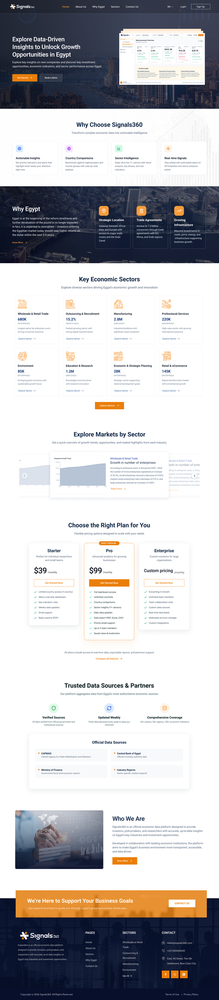
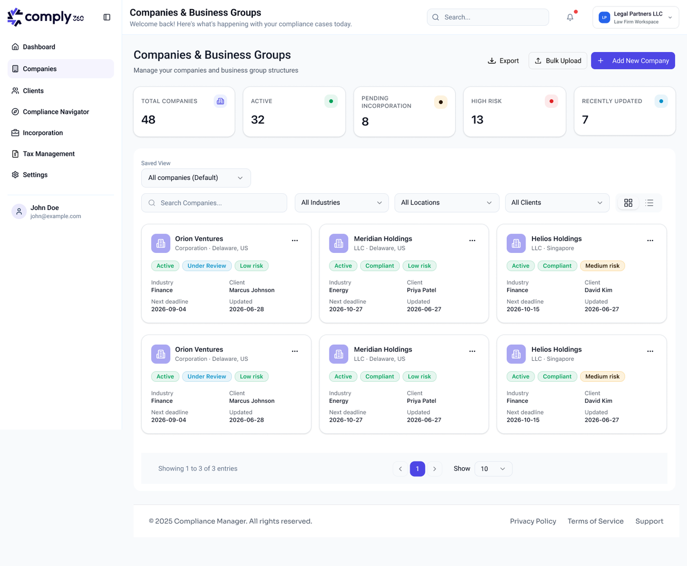
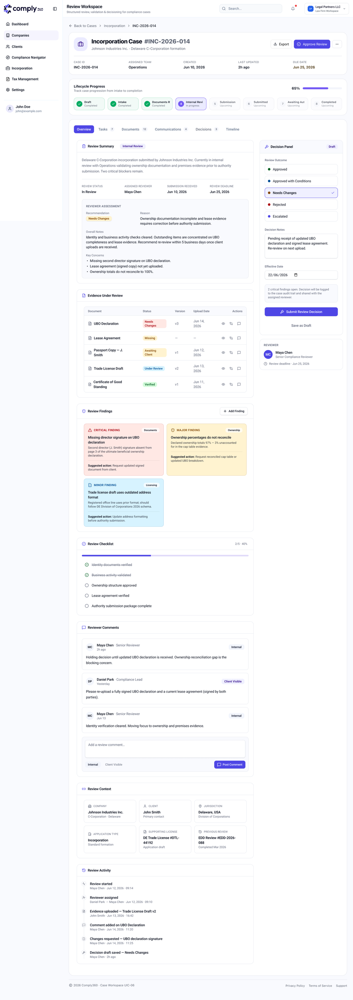

360 · 01
assets/360-1.png

360 · 02
assets/360-2.png

360 · 03
assets/360-3.png
REC-01
360 Company
Senior Product Manager · Sep 2025 – Present
prototyping 30–40% faster · AI-assisted
ProblemComplex, multi-industry compliance data had to become clean, executable engineering work — without fracturing into disconnected silos.
My roleOwn the end-to-end lifecycle of corporate-governance and market-intelligence data hubs (Comply360, Signals360): authoring PRDs and technical scopes, directing agile frontend/backend/QA teams.
OutcomeEmbedded AI-assisted engineering (Cursor, Claude Code, Lovable) into the cycle, cutting rapid-prototyping and PoC timelines by an estimated 30–40%.
The call I'd defend →Built one unified backlog from multi-industry requirements instead of per-industry silos — keeping the data hub coherent as it scales.